2. Network pre-processing and cleaning
2023-02-25
Source:vignettes/sfn02_preprocess_clean.Rmd
sfn02_preprocess_clean.RmdUnfortunately real-world datasets are not always as friendly as those used in tutorials. Pre-processing of the data will often be needed, as well as cleaning the network after construction. This vignette presents some examples that may be of use when going through this phase.
Common pre-processing tasks
Rounding coordinates
You might have a set of lines in which some endpoints are almost shared between two lines. However, the coordinates are stored with so much precision that there is a minor difference between the two points. When constructing a sfnetwork these lines will not be connected because the points are not exactly equal.
We can pre-process the lines by reducing the precision of the coordinates such that the points become exactly equal. A tiny example:
p1 = st_point(c(7, 51))
p2 = st_point(c(8, 52))
p3 = st_point(c(8.000001, 52.000001))
p4 = st_point(c(7, 52))
l1 = st_sfc(st_linestring(c(p1, p2)))
l2 = st_sfc(st_linestring(c(p3, p4)))
edges = st_as_sf(c(l1, l2), crs = 4326)
# The edges are not connected.
as_sfnetwork(edges)#> # A sfnetwork with 4 nodes and 2 edges
#> #
#> # CRS: EPSG:4326
#> #
#> # A rooted forest with 2 trees with spatially explicit edges
#> #
#> # Node Data: 4 × 1 (active)
#> # Geometry type: POINT
#> # Dimension: XY
#> # Bounding box: xmin: 7 ymin: 51 xmax: 8.000001 ymax: 52
#> x
#> <POINT [°]>
#> 1 (7 51)
#> 2 (8 52)
#> 3 (8.000001 52)
#> 4 (7 52)
#> #
#> # Edge Data: 2 × 3
#> # Geometry type: LINESTRING
#> # Dimension: XY
#> # Bounding box: xmin: 7 ymin: 51 xmax: 8.000001 ymax: 52
#> from to x
#> <int> <int> <LINESTRING [°]>
#> 1 1 2 (7 51, 8 52)
#> 2 3 4 (8.000001 52, 7 52)
# Round coordinates to 0 digits.
st_geometry(edges) = st_geometry(edges) %>%
lapply(function(x) round(x, 0)) %>%
st_sfc(crs = st_crs(edges))
# The edges are connected.
as_sfnetwork(edges)#> # A sfnetwork with 3 nodes and 2 edges
#> #
#> # CRS: EPSG:4326
#> #
#> # A rooted tree with spatially explicit edges
#> #
#> # Node Data: 3 × 1 (active)
#> # Geometry type: POINT
#> # Dimension: XY
#> # Bounding box: xmin: 7 ymin: 51 xmax: 8 ymax: 52
#> x
#> <POINT [°]>
#> 1 (7 51)
#> 2 (8 52)
#> 3 (7 52)
#> #
#> # Edge Data: 2 × 3
#> # Geometry type: LINESTRING
#> # Dimension: XY
#> # Bounding box: xmin: 7 ymin: 51 xmax: 8 ymax: 52
#> from to x
#> <int> <int> <LINESTRING [°]>
#> 1 1 2 (7 51, 8 52)
#> 2 2 3 (8 52, 7 52)Note that too much rounding can create linestring geometries of zero length, with the same start and endpoint. This may cause problems later.
Dealing with one-way edges
In sfnetworks you can create directed and undirected
networks. In directed ones, an edge can only be traveled from its start
node to its end node. In undirected ones, an edge can be traveled both
ways. However, in the real world there are networks where some
edges can be traveled both ways and some edges only one way.
For example, a road network in a city where there are one-way
streets.
Unfortunately, neither igraph nor tidygraph
provides an interface for such networks. Therefore, the only way to deal
with this is to create a directed network but first duplicate
and reverse all edge linestrings that can be traveled both
ways.
See the small example below, where we have three lines with one-way
information stored in a oneway column. One of the lines is a
one-way street, the other two are not. By duplicating and reversing the
two linestrings that are not one-way streets, we create a directed
network that correctly models our situation. Note that reversing
linestrings using sf::st_reverse() only works when sf links
to a GEOS version of at least 3.7.0.
p1 = st_point(c(7, 51))
p2 = st_point(c(7, 52))
p3 = st_point(c(8, 52))
l1 = st_sfc(st_linestring(c(p1, p2)))
l2 = st_sfc(st_linestring(c(p1, p3)))
l3 = st_sfc(st_linestring(c(p3, p2)))
edges = st_as_sf(c(l1, l2, l3), crs = 4326)
edges$oneway = c(TRUE, FALSE, FALSE)
edges
#> Simple feature collection with 3 features and 1 field
#> Geometry type: LINESTRING
#> Dimension: XY
#> Bounding box: xmin: 7 ymin: 51 xmax: 8 ymax: 52
#> Geodetic CRS: WGS 84
#> x oneway
#> 1 LINESTRING (7 51, 7 52) TRUE
#> 2 LINESTRING (7 51, 8 52) FALSE
#> 3 LINESTRING (8 52, 7 52) FALSE
duplicates = edges[!edges$oneway, ]
reversed_duplicates = st_reverse(duplicates)
edges = rbind(edges, reversed_duplicates)
net = as_sfnetwork(edges)
activate(net, "edges")#> # A sfnetwork with 3 nodes and 5 edges
#> #
#> # CRS: EPSG:4326
#> #
#> # A directed simple graph with 1 component with spatially explicit edges
#> #
#> # Edge Data: 5 × 4 (active)
#> # Geometry type: LINESTRING
#> # Dimension: XY
#> # Bounding box: xmin: 7 ymin: 51 xmax: 8 ymax: 52
#> from to oneway x
#> <int> <int> <lgl> <LINESTRING [°]>
#> 1 1 2 TRUE (7 51, 7 52)
#> 2 1 3 FALSE (7 51, 8 52)
#> 3 3 2 FALSE (8 52, 7 52)
#> 4 3 1 FALSE (8 52, 7 51)
#> 5 2 3 FALSE (7 52, 8 52)
#> #
#> # Node Data: 3 × 1
#> # Geometry type: POINT
#> # Dimension: XY
#> # Bounding box: xmin: 7 ymin: 51 xmax: 8 ymax: 52
#> x
#> <POINT [°]>
#> 1 (7 51)
#> 2 (7 52)
#> 3 (8 52)Network cleaning functions
The sfnetworks package contains a set of spatial network
specific cleaning functions. They are implemented as spatial morpher
functions. To learn more about spatial morphers and what they are,
see the dedicated
vignette for that. For now, it is sufficient to know that you can
use any spatial morpher function inside the
tidygraph::convert() verb to convert your network into a
different state.
Before presenting the cleaning functions that are currently implemented, lets create a network to be cleaned.
p1 = st_point(c(0, 1))
p2 = st_point(c(1, 1))
p3 = st_point(c(2, 1))
p4 = st_point(c(3, 1))
p5 = st_point(c(4, 1))
p6 = st_point(c(3, 2))
p7 = st_point(c(3, 0))
p8 = st_point(c(4, 3))
p9 = st_point(c(4, 2))
p10 = st_point(c(4, 0))
p11 = st_point(c(5, 2))
p12 = st_point(c(5, 0))
p13 = st_point(c(5, -1))
p14 = st_point(c(5.8, 1))
p15 = st_point(c(6, 1.2))
p16 = st_point(c(6.2, 1))
p17 = st_point(c(6, 0.8))
p18 = st_point(c(6, 2))
p19 = st_point(c(6, -1))
p20 = st_point(c(7, 1))
l1 = st_sfc(st_linestring(c(p1, p2, p3)))
l2 = st_sfc(st_linestring(c(p3, p4, p5)))
l3 = st_sfc(st_linestring(c(p6, p4, p7)))
l4 = st_sfc(st_linestring(c(p8, p11, p9)))
l5 = st_sfc(st_linestring(c(p9, p5, p10)))
l6 = st_sfc(st_linestring(c(p8, p9)))
l7 = st_sfc(st_linestring(c(p10, p12, p13, p10)))
l8 = st_sfc(st_linestring(c(p5, p14)))
l9 = st_sfc(st_linestring(c(p15, p14)))
l10 = st_sfc(st_linestring(c(p16, p15)))
l11 = st_sfc(st_linestring(c(p14, p17)))
l12 = st_sfc(st_linestring(c(p17, p16)))
l13 = st_sfc(st_linestring(c(p15, p18)))
l14 = st_sfc(st_linestring(c(p17, p19)))
l15 = st_sfc(st_linestring(c(p16, p20)))
lines = c(l1, l2, l3, l4, l5, l6, l7, l8, l9, l10, l11, l12, l13, l14, l15)
edge_colors = function(x) rep(sf.colors(12, categorical = TRUE)[-2], 2)[c(1:ecount(x))]
net = as_sfnetwork(lines)
plot(st_geometry(net, "edges"), col = edge_colors(net), lwd = 4)
plot(st_geometry(net, "nodes"), pch = 20, cex = 2, add = TRUE)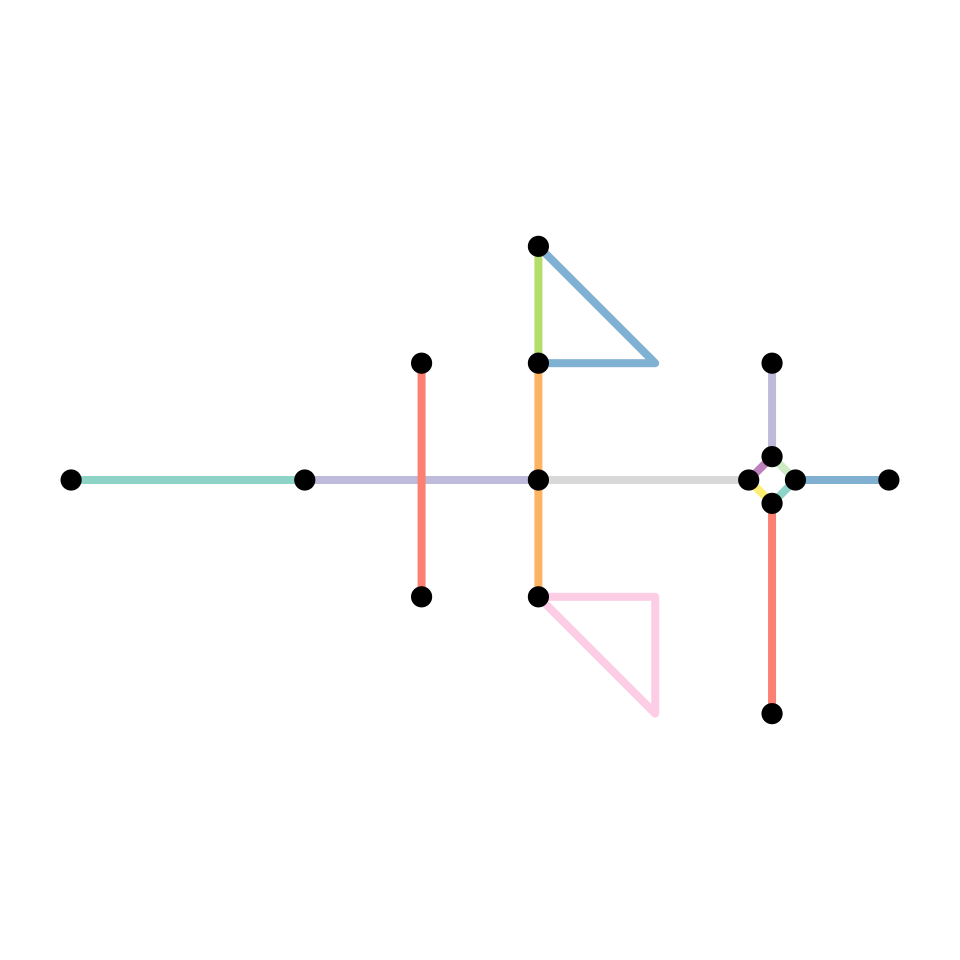
Simplify network
A network may contain sets of edges that connect the same pair of nodes. Such edges can be called multiple edges. Also, it may contain an edge that starts and ends at the same node. Such an edge can be called a loop edge.
In graph theory, a simple graph is defined as a graph that
does not contain multiple edges nor loop edges. To obtain a
simple version of our network, we can remove multiple edges and loop
edges by calling tidygraphs edge filter functions
tidygraph::edge_is_multiple() and
tidygraph::edge_is_loop().
simple = net %>%
activate("edges") %>%
filter(!edge_is_multiple()) %>%
filter(!edge_is_loop())
plot(st_geometry(net, "edges"), col = edge_colors(net), lwd = 4)
plot(st_geometry(net, "nodes"), pch = 20, cex = 1.5, add = TRUE)
plot(st_geometry(simple, "edges"), col = edge_colors(simple), lwd = 4)
plot(st_geometry(simple, "nodes"), pch = 20, cex = 1.5, add = TRUE)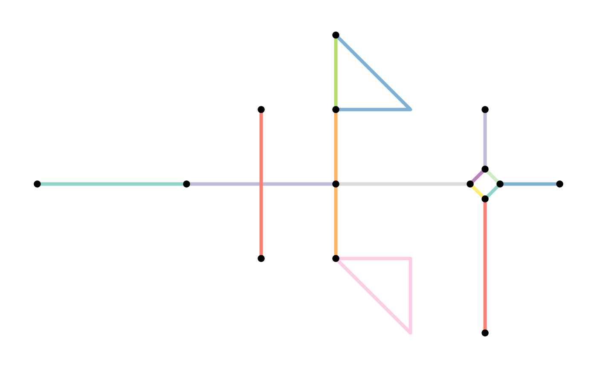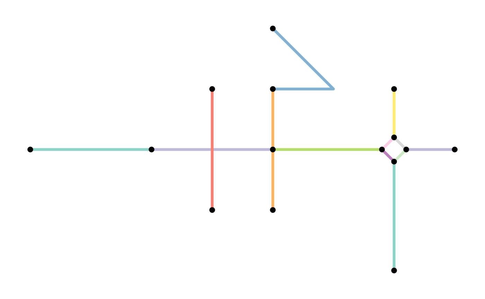
Note that removing multiple edges in that way always keeps the first edge in each set of multiple edges, and drops all the other members of the set. Hence, the resulting network does not contain multiple edges anymore, but the connections between the nodes are preserved. Which of the multiple edges is the first one in a set depends on the order of the edges in the edges table. That is, by re-arranging the edges table before applying the filter you can influence which edges are kept whenever sets of multiple edges are detected. For example, you might want to always keep the edge with the shortest distance in the set.
simple = net %>%
activate("edges") %>%
arrange(edge_length()) %>%
filter(!edge_is_multiple()) %>%
filter(!edge_is_loop())
plot(st_geometry(net, "edges"), col = edge_colors(net), lwd = 4)
plot(st_geometry(net, "nodes"), pch = 20, cex = 1.5, add = TRUE)
plot(st_geometry(simple, "edges"), col = edge_colors(simple), lwd = 4)
plot(st_geometry(simple, "nodes"), pch = 20, cex = 1.5, add = TRUE) 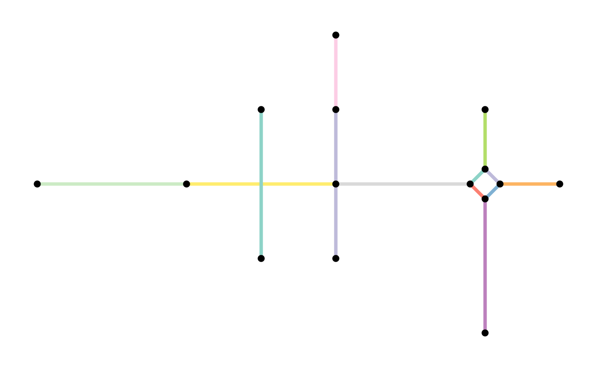
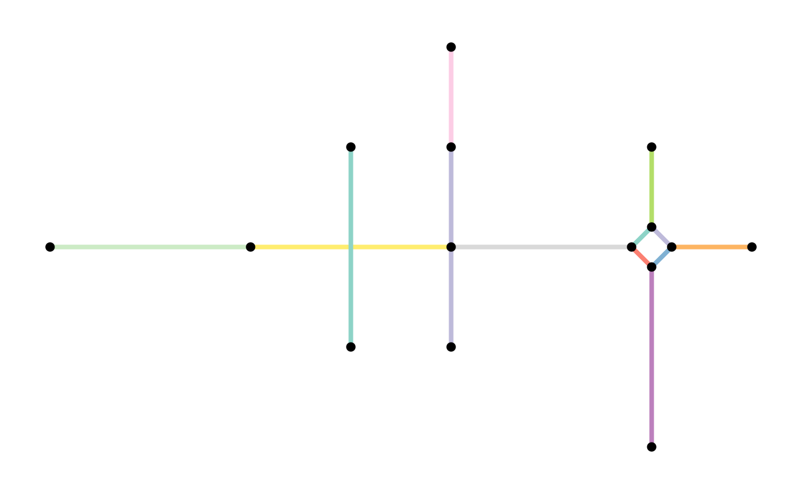
By arranging the edges table first, you can influence which
edge in a set of multiple edges is kept. However, this way of
simplifying still selects a single edge from the set, and drops all the
others. When your edges have attributes, you might prefer to
merge the edges in a set into a single new edge. This new edge
has the geometry of the first edge in the set, but its attribute values
are a combination of the attributes of all the edges in the set. This is
exactly what the function to_spatial_simple() does. It has
an argument summarise_attributes that lets you specify
exactly how you want to merge the attributes of each set of multiple
edges.
How attributes should be combined is of course dependent on the type and purpose of each attribute. Therefore, the combination technique can be specified on a per-attribute basis. There are two ways to specify the combination technique for an attribute:
- As a character, referring to the name of a pre-defined combination
technique in
igraph. Examples includemean,sum,firstandlast. See here for an overview of all implemented techniques. - As a function, taking a vector of attribute values as input and
returning a single value. This is helpful when you want to combine
attributes in a way that is not pre-defined in
igraph.
Providing a single character or a single function
(e.g. summarise_attributes = "sum") will apply the same
technique to each attribute. Instead, you can provide a named list with
a different technique for each attribute. This list can also include one
unnamed element containing the technique that should be applied to all
attributes that were not referenced in any of the other elements. Note
that the geometry-list column, the tidygraph index column, as well as
the from and to columns are not attributes!
The analogue of this in tidyverse terms is a
dplyr::group_by() operation followed by a
dplyr::summarise() call. The groups in this case are
defined by the start and end node indices of the edges. Edges that
connect the same pair of nodes (i.e. multiple edges) are in the same
group. Then, attributes are summarised into a single value for each
group separately.
Enough theory! Lets look at a practical example instead. We will first add some attribute columns to the edges, and then specify different combination techniques when simplifying the network.
# Add some attribute columns to the edges table.
flows = sample(1:10, ecount(net), replace = TRUE)
types = c(rep("path", 8), rep("road", 7))
foo = sample(c(1:ecount(net)), ecount(net))
bar = sample(letters, ecount(net))
net = net %>%
activate("edges") %>%
arrange(edge_length()) %>%
mutate(flow = flows, type = types, foo = foo, bar = bar)
net#> # A sfnetwork with 15 nodes and 15 edges
#> #
#> # CRS: NA
#> #
#> # A directed multigraph with 3 components with spatially explicit edges
#> #
#> # Edge Data: 15 × 7 (active)
#> # Geometry type: LINESTRING
#> # Dimension: XY
#> # Bounding box: xmin: 0 ymin: -1 xmax: 7 ymax: 3
#> from to x flow type foo bar
#> <int> <int> <LINESTRING> <int> <chr> <int> <chr>
#> 1 10 9 (6 1.2, 5.8 1) 2 path 11 b
#> 2 11 10 (6.2 1, 6 1.2) 10 path 9 n
#> 3 9 12 (5.8 1, 6 0.8) 3 path 4 m
#> 4 12 11 (6 0.8, 6.2 1) 8 path 8 d
#> 5 11 15 (6.2 1, 7 1) 7 path 1 q
#> 6 10 13 (6 1.2, 6 2) 3 path 7 f
#> # … with 9 more rows
#> #
#> # Node Data: 15 × 1
#> # Geometry type: POINT
#> # Dimension: XY
#> # Bounding box: xmin: 0 ymin: -1 xmax: 7 ymax: 3
#> x
#> <POINT>
#> 1 (0 1)
#> 2 (2 1)
#> 3 (4 1)
#> # … with 12 more rows
# We know from before that our example network has one set of multiple edges.
# Lets look at them.
net %>%
activate("edges") %>%
filter(edge_is_between(6, 7)) %>%
st_as_sf()#> Simple feature collection with 2 features and 6 fields
#> Geometry type: LINESTRING
#> Dimension: XY
#> Bounding box: xmin: 4 ymin: 2 xmax: 5 ymax: 3
#> CRS: NA
#> # A tibble: 2 × 7
#> from to x flow type foo bar
#> <int> <int> <LINESTRING> <int> <chr> <int> <chr>
#> 1 6 7 (4 3, 4 2) 8 path 13 g
#> 2 6 7 (4 3, 5 2, 4 2) 1 road 2 h
# Define how we want to combine the attributes.
# For the flows:
# --> It makes sense to sum them when edges get merged.
# For the type:
# --> Preserve the type only if all edges in a set have the same type.
# For all other attributes:
# --> Drop these attributes.
combinations = list(
flow = "sum",
type = function(x) if (length(unique(x)) == 1) x[1] else "unknown",
"ignore"
)
# Simplify the network with to_spatial_simple.
simple = convert(net, to_spatial_simple, summarise_attributes = combinations)
# Inspect our merged set of multiple edges.
simple %>%
activate("edges") %>%
filter(edge_is_between(6, 7)) %>%
st_as_sf()#> Simple feature collection with 1 feature and 5 fields
#> Geometry type: LINESTRING
#> Dimension: XY
#> Bounding box: xmin: 4 ymin: 2 xmax: 4 ymax: 3
#> CRS: NA
#> # A tibble: 1 × 6
#> from to x flow type .tidygraph_edge_index
#> <int> <int> <LINESTRING> <dbl> <chr> <list>
#> 1 6 7 (4 3, 4 2) 9 unknown <int [2]>
plot(st_geometry(net, "edges"), col = edge_colors(net), lwd = 4)
plot(st_geometry(net, "nodes"), pch = 20, cex = 1.5, add = TRUE)
plot(st_geometry(simple, "edges"), col = edge_colors(simple), lwd = 4)
plot(st_geometry(simple, "nodes"), pch = 20, cex = 1.5, add = TRUE) 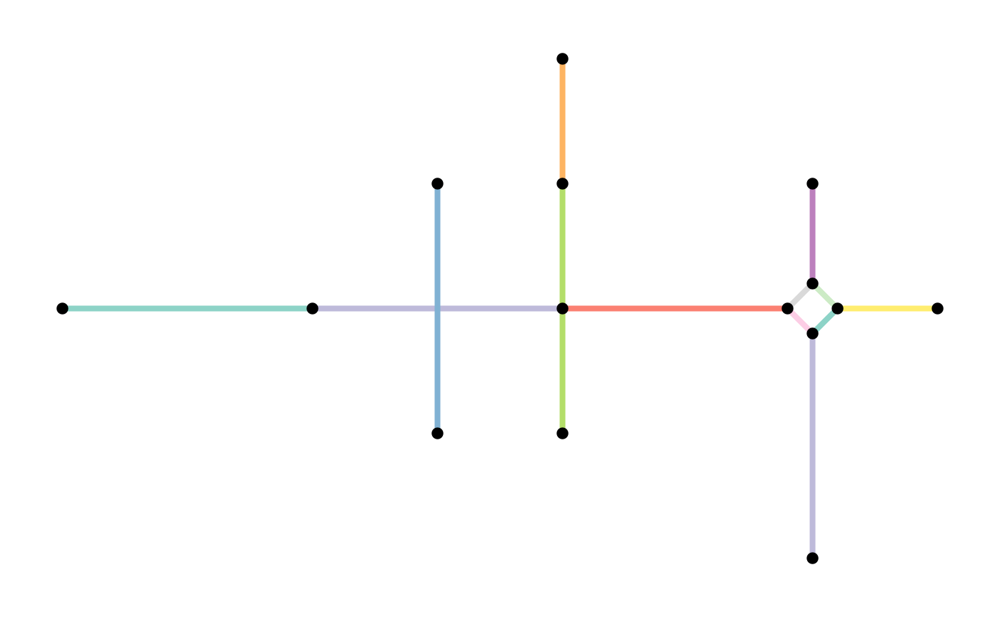
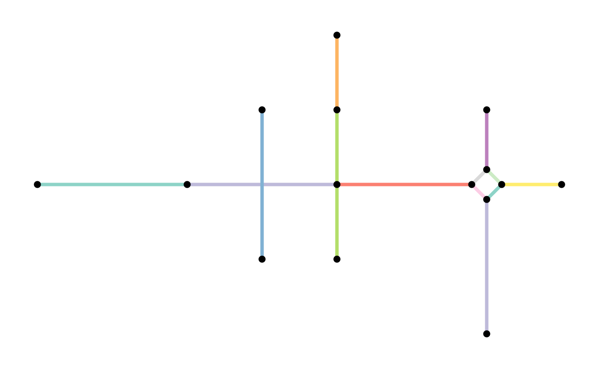
When the edges table does not have attribute columns, using
to_spatial_simple does not have advantages and applying the
filter functions as shown before is faster.
Subdivide edges
When constructing a sfnetwork from a set of sf linestrings, the endpoints of those linestrings become nodes in the network. If endpoints are shared between multiple lines, they become a single node, and the edges are connected. However, a linestring geometry can also contain interior points that define the shape of the line, but are not its endpoints. It can happen that such an interior point in one edge is exactly equal to either an interior point or endpoint of another edge. In the network structure, however, these two edges are not connected, because they don’t share endpoints. If this is unwanted, we need to split these two edges at their shared point and connect them accordingly.
In graph theory terms the process of splitting and edge is called subdivision: the subdivision of an edge \(o = \{a, b\}\) (i.e. an edge from node \(a\) to node \(b\)) is the addition of a new node \(c\) and the replacement of \(o\) by two new edges \(p = \{a, c\}\) and \(q = \{c, b\}\).
The function to_spatial_subdivision() subdivides edges
at interior points whenever these interior points are equal to one or
more interior points or endpoints of other edges, and recalculates
network connectivity afterwards.
To illustrate the workflow, lets consider a situation where an interior point \(p_{x}\) in edge \(x\) is shared with point \(p_{y}\) in edge \(y\). That gives two possible situations:
-
\(p_{y}\) is an interior point of
\(y\). Since \(p_{x}\) and \(p_{y}\) are both interior points, neither
of them is already a node in the network. Then:
- \(x\) is subdivided at \(p_{x}\) into two new edges \(x_{1}\) and \(x_{2}\) and new node \(p_{x}\).
- \(y\) is subdivided at \(p_{y}\) into two new edges \(y_{1}\) and \(y_{2}\) and new node \(p_{y}\).
- The new nodes \(p_{x}\) and \(p_{y}\) are merged into a single node \(p\) with the edge set \(\{x_{1}, x_{2}, y_{1}, y_{2}\}\) as incidents.
-
\(p_{y}\) is and endpoint of \(y\). Since \(p_{y}\) is an edge endpoint, it is already
a node in the network. Then:
- \(x\) is subdivided at \(p_{x}\) into two new edges \(x_{1}\) and \(x_{2}\) and new node \(p_{x}\).
- The new node \(p_{x}\) is merged with node \(p_{y}\) into a single node \(p\) with the edge set \(\{y, x_{1}, x_{2}\}\) as incidents.
Note that an edge is not subdivided when it crosses another edge at a location that is not an interior point or endpoint in the linestring geometry of any of the two edges.
For our example network, this means:
subdivision = convert(simple, to_spatial_subdivision)
#> Warning: to_spatial_subdivision assumes attributes are constant over geometries
plot(st_geometry(simple, "edges"), col = edge_colors(simple), lwd = 4)
plot(st_geometry(simple, "nodes"), pch = 20, cex = 1.5, add = TRUE)
plot(st_geometry(subdivision, "edges"), col = edge_colors(subdivision), lwd = 4)
plot(st_geometry(subdivision, "nodes"), pch = 20, cex = 1.5, add = TRUE)
Smooth pseudo nodes
A network may contain nodes that have only one incoming and one outgoing edge. For tasks like calculating shortest paths, such nodes are redundant, because they don’t represent a point where different directions can possibly be taken. Sometimes, these type of nodes are referred to as pseudo nodes. Note that their equivalent in undirected networks is any node with only two incident edges, since incoming and outgoing does not have a meaning there. To reduce complexity of subsequent operations, we might want to get rid of these pseudo nodes.
In graph theory terms this process is the opposite of subdivision and also called smoothing: smoothing a node \(b\) with incident edges \(o = \{a, b\}\) and \(p = \{b, c\}\) removes \(b\), \(o\) and \(p\) and creates the new edge \(q = \{a, c\}\).
The function to_spatial_smooth() iteratively smooths
pseudo nodes, and after each removal concatenates the linestring
geometries of the two affected edges together into a new, single
linestring geometry.
smoothed = convert(subdivision, to_spatial_smooth)
plot(st_geometry(subdivision, "edges"), col = edge_colors(subdivision), lwd = 4)
plot(st_geometry(subdivision, "nodes"), pch = 20, cex = 1.5, add = TRUE)
plot(st_geometry(smoothed, "edges"), col = edge_colors(smoothed), lwd = 4)
plot(st_geometry(smoothed, "nodes"), pch = 20, cex = 1.5, add = TRUE)
 There are different ways in which the smoothing process can be tuned.
Firstly, it is possible to specify how attributes of concatenated edges
should be summarized, just as with
There are different ways in which the smoothing process can be tuned.
Firstly, it is possible to specify how attributes of concatenated edges
should be summarized, just as with to_spatial_simple().
That is, you can specify a single summarise technique to be applied to
all attributes (e.g. summarise_attributes = "sum"), a named
list with a different summarise technique per attribute
(e.g. summarise_attributes = list(foo = "sum", bar = "mean")),
or a named list including an unnamed default technique for those
attributes that where not mentioned
(e.g. summarise_attributes = list(foo = "sum", "mean")).
The techniques can be chosen from a set of pre-defined functions, but
can also be a custom function provided by you. See the igraph
documentation for details. Note that the geometry-list column, the
tidygraph index column, as well as the from and to
columns are not attributes!
# We know from before that our example network has two pseudo nodes.
# Lets look at the attributes of their incident edges.
subdivision %>%
activate("edges") %>%
filter(edge_is_incident(2) | edge_is_incident(9)) %>%
st_as_sf()#> Simple feature collection with 4 features and 5 fields
#> Geometry type: LINESTRING
#> Dimension: XY
#> Bounding box: xmin: 0 ymin: 1 xmax: 4 ymax: 3
#> CRS: NA
#> # A tibble: 4 × 6
#> from to x flow type .tidygraph_edge_index
#> <int> <int> <LINESTRING> <dbl> <chr> <int>
#> 1 1 2 (0 1, 1 1, 2 1) 8 road 1
#> 2 2 3 (2 1, 3 1) 2 road 2
#> 3 8 9 (4 3, 4 2) 9 unknown 5
#> 4 9 4 (4 2, 4 1) 1 road 6
# Define how we want to combine the attributes.
# For the flows:
# --> It makes sense to sum them when edges get merged.
# For the type:
# --> Preserve the type only if all edges in a set have the same type.
combinations = list(
flow = "sum",
type = function(x) if (length(unique(x)) == 1) x[1] else "unknown",
"ignore"
)
# Apply the morpher.
other_smoothed = convert(subdivision, to_spatial_smooth, summarise_attributes = combinations)
# Inspect our concatenated edges.
other_smoothed %>%
activate("edges") %>%
filter(edge_is_between(1, 2) | edge_is_between(7, 3)) %>%
st_as_sf()#> Simple feature collection with 2 features and 5 fields
#> Geometry type: LINESTRING
#> Dimension: XY
#> Bounding box: xmin: 0 ymin: 1 xmax: 4 ymax: 3
#> CRS: NA
#> # A tibble: 2 × 6
#> from to flow type .tidygraph_edge_index x
#> <int> <int> <dbl> <chr> <list> <LINESTRING>
#> 1 1 2 10 road <int [2]> (0 1, 1 1, 2 1, 3 1)
#> 2 7 3 10 unknown <int [2]> (4 3, 4 2, 4 1)Secondly, it is possible to only remove those pseudo nodes for which
attributes among their incident edges are equal. To do this, set
require_equal = TRUE. Optionally, you can provide a list of
attribute names instead, such that only those attributes are checked for
equality, instead of all attributes. Again, remember that the
geometry-list column, the tidygraph index column, as well as the
from and to columns are not considered attributes in
this case.
In our example, our first pseudo node has incident edges of the same type (“road”), while the second pseudo node has incident edges of differing types (“road” and “unknown”). If we require the type attribute to be equal, the second pseudo node will not be removed.
other_smoothed = convert(subdivision, to_spatial_smooth, require_equal = "type")
plot(st_geometry(subdivision, "edges"), col = edge_colors(subdivision), lwd = 4)
plot(st_geometry(subdivision, "nodes"), pch = 20, cex = 1.5, add = TRUE)
plot(st_geometry(other_smoothed, "edges"), col = edge_colors(smoothed), lwd = 4)
plot(st_geometry(other_smoothed, "nodes"), pch = 20, cex = 1.5, add = TRUE)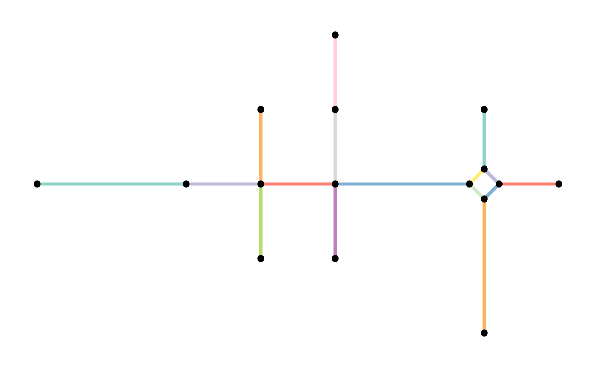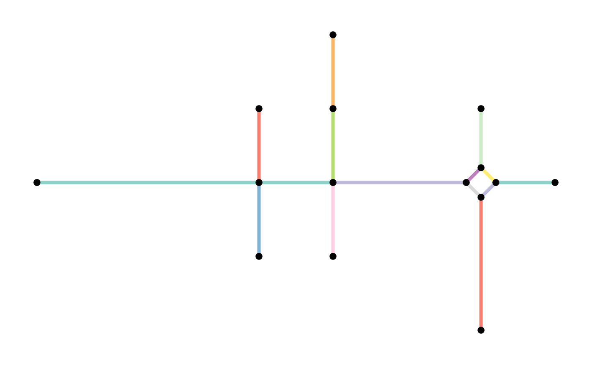
Thirdly, it is also possible to directly specify a set of nodes that
should never be removed, even if they are a pseudo node. This can be
done by either providing a vector of node indices or a set of geospatial
points to the protect argument. In the latter case, the
function will protect the nearest node to each of these points. This can
be helpful when you already know you want to use this nodes at a later
stage for routing purposes. For example:
other_smoothed = convert(subdivision, to_spatial_smooth, protect = 2)
plot(st_geometry(subdivision, "edges"), col = edge_colors(subdivision), lwd = 4)
plot(st_geometry(subdivision, "nodes"), pch = 20, cex = 1.5, add = TRUE)
plot(st_geometry(other_smoothed, "edges"), col = edge_colors(smoothed), lwd = 4)
plot(st_geometry(other_smoothed, "nodes"), pch = 20, cex = 1.5, add = TRUE)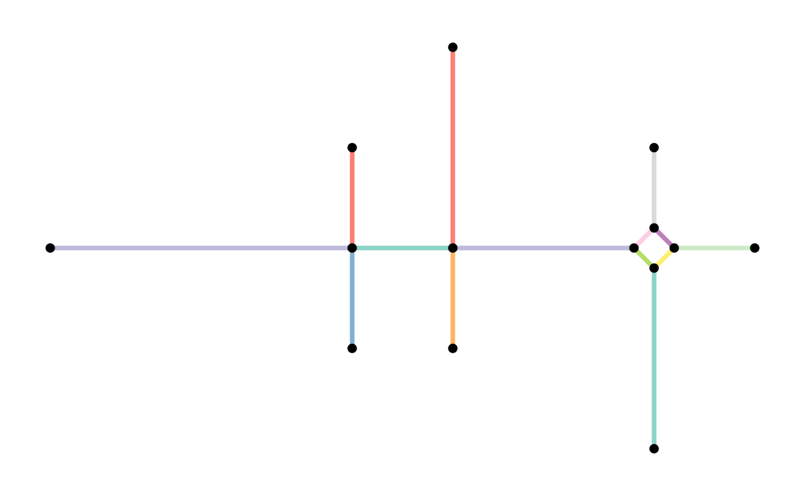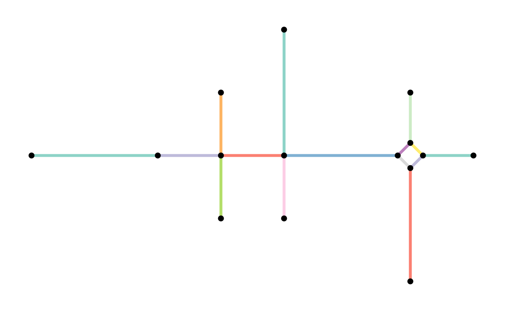
Simplify intersections
Especially in road networks you may find that intersections between edges are not modelled by a single node. Instead, each leg of the intersection has a dedicated edge. To simplify the topology of your network, you might want to reduce such complex intersection structures into a single node. Hence, we want to reduce a group of nodes into a single node, while maintaining the connectivity of the network.
In graph theory terms this process is called contraction: the contraction of a set of nodes \(P = \{p_{1}, p_{2}, ..., p_{n}\}\) is the replacement of \(S\) and all its incident edges by a single node \(p^{*}\) and a set of edges that connect \(p^{*}\) to all nodes that were adjacent to any node \(p_{i} \in P\).
The function to_spatial_contracted() contracts groups of
nodes based on a given grouping variable. The geometry of each
contracted node is the centroid of the original group members’
geometries. Moreover, the geometries of the edges that start or end at a
contracted node are updated such that their boundaries match the new
node geometries.
Grouping variables are internally forwarded to
dplyr::group_by(). That means you can group the nodes based
on any (combination of) attribute(s). However, in this case, we want to
group the nodes spatially, such that nodes that are very close to each
other in space will form a group and get contracted. To do so, we can
use any spatial clustering algorithm. In this example, we apply the
well-known DBSCAN algorithm as implemented in the R package
dbscan.
# Retrieve the coordinates of the nodes.
node_coords = smoothed %>%
activate("nodes") %>%
st_coordinates()
# Cluster the nodes with the DBSCAN spatial clustering algorithm.
# We set eps = 0.5 such that:
# Nodes within a distance of 0.5 from each other will be in the same cluster.
# We set minPts = 1 such that:
# A node is assigned a cluster even if it is the only member of that cluster.
clusters = dbscan(node_coords, eps = 0.5, minPts = 1)$cluster
# Add the cluster information to the nodes of the network.
clustered = smoothed %>%
activate("nodes") %>%
mutate(cls = clusters)Now we have assigned each node to a spatial cluster. However, we
forgot one important point. When simplifying intersections, it is not
only important that the contracted nodes are close to each other in
space. They should also be connected. Two nodes that are close
to each other but not connected, can never be part of the same
intersection. Hence, a group of nodes to be contracted should in this
case be located in the same component of the network. We can
use tidygraph::group_components() to assign a component
index to each node. Note that in our example network this is not so much
of use, since the whole network forms a single connected component. But
for the sake of completeness, we will still show it:
clustered = clustered %>%
mutate(cmp = group_components())
select(clustered, cls, cmp)#> # A sfnetwork with 14 nodes and 14 edges
#> #
#> # CRS: NA
#> #
#> # A directed simple graph with 1 component with spatially explicit edges
#> #
#> # Node Data: 14 × 3 (active)
#> # Geometry type: POINT
#> # Dimension: XY
#> # Bounding box: xmin: 0 ymin: -1 xmax: 7 ymax: 3
#> cls cmp x
#> <int> <int> <POINT>
#> 1 1 1 (0 1)
#> 2 2 1 (3 1)
#> 3 3 1 (4 1)
#> 4 4 1 (5.8 1)
#> 5 5 1 (3 2)
#> 6 6 1 (3 0)
#> # … with 8 more rows
#> #
#> # Edge Data: 14 × 6
#> # Geometry type: LINESTRING
#> # Dimension: XY
#> # Bounding box: xmin: 0 ymin: -1 xmax: 7 ymax: 3
#> from to flow type .tidygraph_edge_index x
#> <int> <int> <dbl> <chr> <list> <LINESTRING>
#> 1 2 3 2 road <int [1]> (3 1, 4 1)
#> 2 3 4 10 path <int [1]> (4 1, 5.8 1)
#> 3 5 2 7 road <int [1]> (3 2, 3 1)
#> # … with 11 more rowsThe combination of the cluster index and the component index can now be used to define the groups of nodes to be contracted. Nodes that form a group on their own will remain unchanged.
A point of attention is that contraction introduces new multiple
edges and/or loop edges. Multiple edges are introduced by
contraction when there are several connections between the same groups
of nodes. Loop edges are introduced by contraction when there are
connections within a group. Setting simplify = TRUE will
remove the multiple and loop edges after contraction. However, note that
this also removes multiple and loop edges that already existed before
contraction.
contracted = convert(
clustered,
to_spatial_contracted,
cls, cmp,
simplify = TRUE
)
plot(st_geometry(smoothed, "edges"), col = edge_colors(smoothed), lwd = 4)
plot(st_geometry(smoothed, "nodes"), pch = 20, cex = 1.5, add = TRUE)
plot(st_geometry(contracted, "edges"), col = edge_colors(contracted), lwd = 4)
plot(st_geometry(contracted, "nodes"), pch = 20, cex = 1.5, add = TRUE)

One thing we did not mention yet: in the same way as
to_spatial_simple() allowed you to combine attributes of
multiple edges and to_spatial_smooth() allowed to combine
attributes of concatenated edges, to_spatial_contracted()
allows you to combine attributes of contracted nodes. It works exactly
the same: you can specify a single summarise technique to be applied to
all attributes (e.g. summarise_attributes = "sum"), a named
list with a different summarise technique per attribute
(e.g. summarise_attributes = list(foo = "sum", bar = "mean")),
or a named list including an unnamed default technique for those
attributes that where not mentioned
(e.g. summarise_attributes = list(foo = "sum", "mean")).
The techniques can be chosen from a set of pre-defined functions, but
can also be a custom function provided by you. See the igraph
documentation for details. Note that the geometry-list column, the
tidygraph index column, as well as the from and to
columns are not attributes!
An example:
# Add some additional attribute columns to the nodes table.
clustered = clustered %>%
activate("nodes") %>%
mutate(is_priority = sample(
c(TRUE, FALSE),
vcount(clustered),
replace = TRUE
))
# We know from before there is one group with several close, connected nodes.
# Lets look at them.
clustered %>%
activate("nodes") %>%
filter(cls == 4 & cmp == 1) %>%
st_as_sf()#> Simple feature collection with 4 features and 4 fields
#> Geometry type: POINT
#> Dimension: XY
#> Bounding box: xmin: 5.8 ymin: 0.8 xmax: 6.2 ymax: 1.2
#> CRS: NA
#> # A tibble: 4 × 5
#> x .tidygraph_node_index cls cmp is_priority
#> <POINT> <int> <int> <int> <lgl>
#> 1 (5.8 1) 5 4 1 TRUE
#> 2 (6 0.8) 11 4 1 TRUE
#> 3 (6 1.2) 12 4 1 FALSE
#> 4 (6.2 1) 14 4 1 TRUE
# Define how we want to combine the attributes.
# For the boolean is_priority variable:
# --> We want it to be TRUE if any of the nodes has a values of TRUE.
# For the others, which were used as grouping variables:
# --> Drop these attributes.
combinations = list(
is_priority = function(x) any(x),
"ignore"
)
# Contract with to_spatial_contracted.
contracted = convert(
clustered,
to_spatial_contracted,
cls, cmp,
simplify = TRUE,
summarise_attributes = combinations
)
# Inspect our contracted group of nodes.
contracted %>%
activate("nodes") %>%
slice(4) %>%
st_as_sf()#> Simple feature collection with 1 feature and 2 fields
#> Geometry type: POINT
#> Dimension: XY
#> Bounding box: xmin: 6 ymin: 1 xmax: 6 ymax: 1
#> CRS: NA
#> # A tibble: 1 × 3
#> .tidygraph_node_index is_priority x
#> <list> <lgl> <POINT>
#> 1 <int [4]> TRUE (6 1)Overview
After applying all the network cleaning functions described in the previous sections, we have cleaned our original network as follows:
plot(st_geometry(net, "edges"), col = edge_colors(net), lwd = 4)
plot(st_geometry(net, "nodes"), pch = 20, cex = 1.5, add = TRUE)
plot(st_geometry(contracted, "edges"), col = edge_colors(contracted), lwd = 4)
plot(st_geometry(contracted, "nodes"), pch = 20, cex = 1.5, add = TRUE)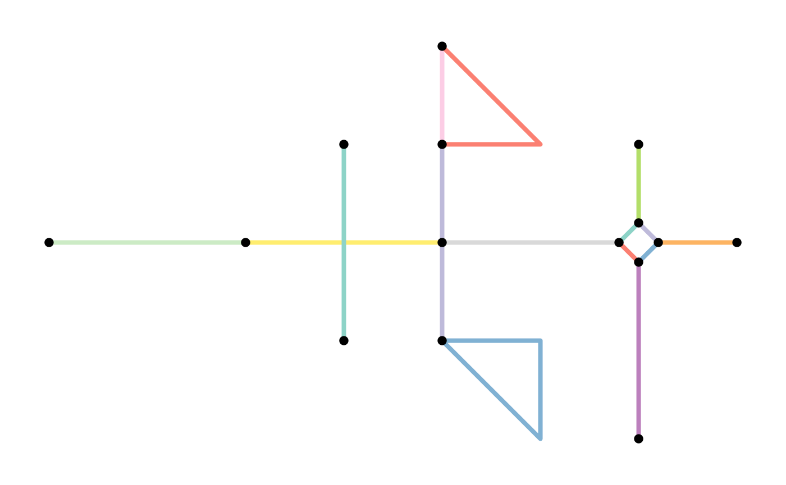